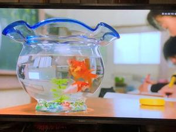

うるがいの話 ある日
最新: 金魚鉢【うるがいの話 ある日】とは 一日だけのプログです
『うるがいの話』の最新一日だけのプログで、通信料が少なく経済的だ。カニの画像をクリックすると全ての日付が載る『うるがいの話』サイトを表示します
|
|
【うるがいの話】 うるがい(ｳﾙｶﾞｲ urugai)とは、『もずくがに』の名前でとても大きくなります。 |
|---|---|
|
|
【カミマヤーの話】 猫のことを方言でマヤーといいます。カミマヤー（kamimayaa）とは、神の猫のことです。 |
|
【たながぁの音楽】 たながぁ（ﾀﾅｶﾞｰ tanagaa）とは手長えびのことで、何種類かあり大きいのは車 エビぐらいになります。 |

|
【ぶながぁの話】 ぶながぁ(ﾌﾞﾅｶﾞｰ bunagaa)とは、赤い髪の毛、赤い身体、そして身長は１ｍ２０ｃｍ ぐらい、川の蟹を食べているの目撃された。場所は沖縄県国頭郡大宜味村のと ある村僕の隣近所に住んでいる爺さんから、聞いた話です。 |
|
|
【ギーマの話】 ギーマ(giima)とは、山原の里山に咲くスズランに似た、 花を付けます。実は食べられます、 気が付くと口の周りが紫になっています。 |
2022年12月18日 (日）金魚鉢
16:11

とある映画で金魚鉢をみる。小学生のころ、教室で金魚を金魚鉢で飼っていた
あるとき、照屋エツコさんが、金魚鉢を掃除するとき誤って金魚を、死なせて
しまったと大泣きしていたことを思いだす。全く関係ないが、今朝『目の前で
友達が車を横転させ、助けに向かった自衛隊の人が、毛布でくるんだ友達を抱
え私に亡くなったと告げる』夢をみて、一発で目が覚めた。心配になってネッ
トで検索した。
【夢占い診断】知り合いが亡くなる夢の意味とは？
知り合いの中でも友人と呼べるほど仲が良い人が亡くなる夢って、苦手なこと
を克服できたり、新たなスキルが開花する暗示。
他にも似たりよたっりの内容が載っているのを見て、ホっとする。
１６時０７分 ビットコインの総資産 ￥６、６４１（↑１０）